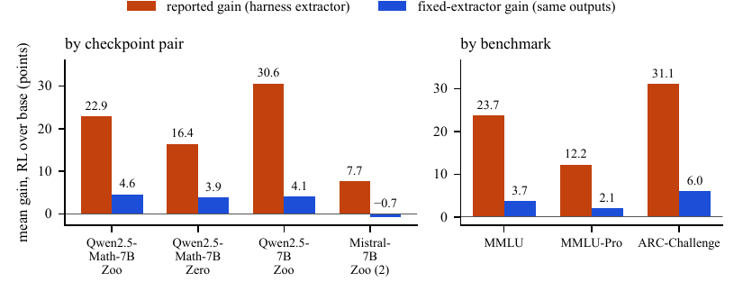
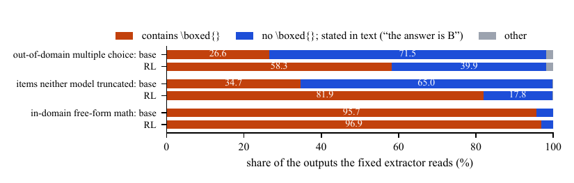
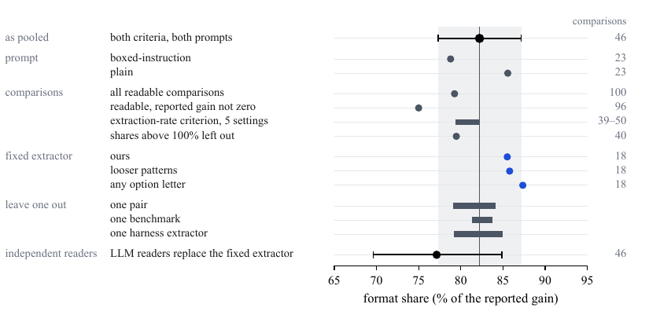

On ne ré-entraîne rien : on génère les sorties d'un base model et de son successeur RLVR sur les mêmes items gelés, mêmes prompts, décodage glouton, puis on les lit deux fois — une fois avec les extracteurs copiés tels quels de six dépôts publics, une fois avec un extracteur maison ω qui lit une réponse énoncée qu'elle soit dans \boxed{} ou dans le texte — et l'écart entre les deux gains est, par définition, du gain de format.
Claim principal, précisément : sur 46 comparaisons issues de 4 paires base→RL 7B des releases SimpleRL, en multiple-choice out-of-domain (MMLU, MMLU-Pro, ARC-Challenge), la format share = Σ(gain rapporté − gain ω)/Σ(gain rapporté) = 0,8222 [IC 95 % 0,7735–0,8716] : gain moyen rapporté 22,5 points par comparaison, gain lu par ω 4,0 points [§4.1, Tab. 19/strata, Tab. 9/app-denominator]. Mécanisme : 26,6 % des sorties lisibles des base models contiennent un \boxed{} contre 58,3 % pour les RL (29,5 % contre 66,9 % sur les 4 paires du résultat principal) [§4.2, App. A].
⚠️ Ce que le papier ne dit pas et qu'on lui fait dire. Le 82 % n'est pas la décomposition d'un chiffre publié : les deux prompts sont de l'auteur, et l'appariement « extracteur qui lit \boxed{} d'abord × MMLU/MMLU-Pro/ARC » est de l'auteur — « its repository does not use it on these benchmarks » [§3, §6 No published gain is decomposed]. Les extracteurs box-first portent 97,6 % du gain rapporté sommé [App. D]. Avec l'extracteur que SimpleRL-Zoo utilise réellement (celui de Qwen2.5-Math, qui lit aussi les lettres dans le texte), la part tombe à 0,562 sur ses 9 comparaisons, et à 0,378 sur MMLU — le seul appariement que son dépôt fait vraiment [Tab. 13].
Pas de données d'entraînement : le papier ne fait aucun RL. Ce qui tient lieu de « data » est une grille d'inférence, et c'est elle qu'il faut auditer.
records/screening/rlvr-pairs-verified.json.items_sha_mismatches = 0 [§Reproducibility, App. J, results/MANIFEST.json]. C'est le contrôle qui rend l'affirmation « le jeu d'éval n'a pas bougé entre les deux modèles » prouvable et pas déclarative.Il n'y a pas d'environnement. Le « harness » est le pipeline de génération puis de scoring, et sa séparation en deux est le point transférable.
float16 (choisi parce que tous les GPU utilisés ne supportent pas bf16 ; les deux modèles d'une paire partagent la précision), ≤ 2 048 nouveaux tokens, max_model_len 4096 [App. J, records/larger-pairs-precommitment.json]. Type de GPU : non précisé.Question: ``
Le prompt *plain* **supprime la deuxième phrase**. Les deux sont enveloppés dans le chat template du checkpoint quand il en expédie un, et **gardent le system message par défaut du template** — qui pour Qwen2.5-Math-7B demande lui-même la réponsewithin \boxed{}. Donc pour deux des quatre paires, le prompt « plain » **porte quand même une demande de box** [§3].
- **Troncature / contexte long** : la limite de 2 048 tokens est le principal mode de panne du harness, et il est mesuré. Mistral-7B, DeepSeek-Math-7B et leurs RL n'expédient **aucun chat template** et courent jusqu'à la limite sur **61 à 86 %** des items — 4 checkpoints prennent **89 % du temps de génération** [App. J]. Qwen2.5-1.5B court à la limite sur **98,7 %** des items, ce qui rend ses deux paires illisibles et les sort de toute moyenne [App. H].
- **Contrôle du confondant de troncature** [§4.2] : sur les items où **aucun** des deux modèles n'atteint la limite, l'écart de boxing s'**élargit** (34,7 % contre 81,9 %) au lieu de se réduire. La troncature n'explique donc pas le mécanisme. C'est le bon contrôle, et il est fait.
- **Sorties mal formées — les 5 comportements des 9 extracteurs quand rien ne matche** [App. E, *When nothing matches*] :nothing(MATH, verl strict, les 2 simple-evals) ; la chaîne"[invalid]"(lm-eval GSM8K, 99,02 % du temps sur 76 428 réponses sans chiffre) ; la chaîne **vide** ou n'importe quelle lettre ou **le texte de la réponse** (Qwen2.5-Math, sur items keyés A–E) ; un run de ponctuation sans chiffre (les 2 règles flexibles) ; **la réponse entière** (Open-Reasoner-Zero appliqué à tout le texte). Convention de scoring : unnothing` est une abstention et compte faux ; une chaîne retournée, vide ou non, est une réponse et compte faux sauf si elle matche la clé.
- Le piège d'infra à retenir : le scoring multiple-choice se fait sur le premier caractère de la réponse extraite. Combiné au fallback « réponse entière » d'ORZ, une réponse qui commence par « Answer » est scorée option A. Mesuré : ORZ retourne une réponse entière de plus de 40 caractères sur 78,76 % des sorties base et 49,67 % des sorties RL, et crédite une bonne réponse par ce seul mécanisme sur 6,99 % et 4,61 % [App. E]. Le crédit tombe plus sur le base model, ce qui baisse la part de format ; son effet sur le résultat principal n'est pas calculé.
- Exemple de trajectoire (Fig. 1, p. 2 du PDF) : un item ARC-Challenge. Base Qwen2.5-7B : « The correct answer is B) 5 m/s. » RL SimpleRL-Zoo : « Anna's average speed is \boxed{B}. » Les deux réponses sont identiques et justes ; un extracteur qui ne lit que la box compte la seconde. Sur les 500 items : extracteur box-only +30,6, ω +9,8, format gain 20,8 points, share 0,68.
Il n'y a pas de reward. Le « vérifieur » dont ce papier mesure la fiabilité est l'extracteur de réponse — et c'est le point où le papier est le plus utile au corpus.
hendrycks/math @ 940d1bf, dernier \boxed{}), Qwen2.5-Math (QwenLM/Qwen2.5-Math @ cb098e1, benchmark-aware + letter step), Open-Reasoner-Zero (@ f6d1ec7, dernier \boxed{}), simple-evals MC et math (openai/simple-evals @ 5e623c2), lm-eval GSM8K strict et flexible (@ b733598), verl GSM8K strict et flexible (via hkust-nlp/simpleRL-reason @ 2204dd1 — la reward function d'entraînement). Chaque écart entre la copie exécutable et la source est listé avec son effet mesuré [Tab. 17] : p. ex. le helper partagé MATH/ORZ accepte \boxed suivi d'un espace, ce que ni l'une ni l'autre source ne fait → se déclenche sur 0 des 111 168 réponses. C'est le niveau de discipline qu'aucun autre papier du corpus n'atteint sur son vérifieur.\boxed{} (\boxed{B}, \boxed{(B)}) ;
2. une lettre dans \boxed{\text{}} ;
3. une lettre après « answer is », « the answer is », « the correct answer is » (avec ou sans deux-points, gras, parenthèses) ;
4. une lettre après « Answer: » ;
5. une ligne qui ne contient que la lettre (« B », « (B) », « B. », « B) ») ;
6. une lettre après « option » ou « choice ».Seules les lettres d'option de l'item comptent ; une lettre suivie directement d'une autre lettre n'est pas lue (« the answer is Because » ne donne rien) ; positions 3, 4, 6 insensibles à la casse. Si rien ne matche, ω s'abstient et l'item compte faux pour ce modèle. ω ne jette jamais un item — « an extractor allowed to skip items could raise its own accuracy by skipping the hard ones ». C'est le bon raisonnement et il est explicite.
ADVISORY_oracle_abstention_material recense 376 comparaisons sur 616 où l'abstention de ω pourrait porter un quart du gain [results/MANIFEST.md]. L'instrument de référence est donc matériellement bruité sur plus de la moitié de la grille.boxed{B} sans son backslash (27). Sur les 80 items échantillonnés de cette comparaison, les readers indépendants trouvent les deux modèles à égalité, 90,0 % chacun, là où ω lit +7,5 points. Donc sur l'exemple de tête, le 9,8 de ω surestime le gain réel et le 0,68 sous-estime la part de format.claude-haiku-4-5-20251001) sur toutes les réponses, Claude Opus 5.5 en départage. Chaque lot = un appel neuf de claude -p dans un dossier temporaire vide, persistance de session coupée. Accord des deux premiers : 98,2 % sur 2 719, κ de Cohen 0,978 ; 51 réponses départagées, aucune manquante.
2. Extracteur externe en place de ω [Tab. 15] : celui de Qwen2.5-Math, que l'auteur n'a pas écrit, donne 0,775 sur ses 25 comparaisons contre 0,855 pour ω sur ses 18 ; sur les 18 communes, 0,8277 contre 0,8551, différence −0,0274 [−0,0640, +0,0093]. ⚠️ Cet accord est une annulation : +0,195 sur MMLU (6 comparaisons, où l'externe applique sa règle lettre) et −0,136 sur MMLU-Pro + ARC (12). Comparaison par comparaison les deux parts diffèrent de 0,25 en moyenne, et dans 5 des 18 les deux extracteurs ne s'accordent pas sur le signe du gain.
3. Suite de poison — harness/poison_test.py dans la release : « a checker that has not been shown to go RED on a broken input has not been shown to do anything. Two of these units are DELIBERATE POISONS that MUST fire ». Le vérifieur a donc été attaqué, sur des entrées synthétiques construites pour casser la décomposition. Case rarement cochée dans ce corpus.records/] : adjudication-precommitment.json épingle le sha256 du prompt des readers (e2f32653…) et la population (50 comparaisons, part 0,8473) avant le tirage de l'échantillon ; harness/adjudicate.py pin le sha256 de la déclaration (88375676…) et refuse de tourner si elle a changé. larger-pairs-precommitment.json daté 2026-08-19, avant toute génération 24B/32B, avec les seuils de lecture fixés d'avance (≥ 0,60 = tient, < 0,40 = échoue, entre = indéterminé). ⚠️ Et une auto-correction publiée : adjudication-precommitment.CORRECTION.md signale que le champ written_at « 04:40:00 » a été tapé, pas lu à l'horloge ; les mtime réels (déclaration 04:36:42, prompt 04:36:22, échantillon 04:37:33, première sortie reader 04:37:49) placent bien la déclaration avant, « the typed value would have put it after ». Le fichier n'est pas réédité pour ne pas casser le pin. C'est le seul préenregistrement de ce corpus qui s'auto-réfute sur un détail et le publie.Aucune. Le papier n'exécute pas de RL — c'est sa thèse méthodologique : « It needs only the two models' outputs, re-read by one extractor on a CPU, and no RL run » [§1].
⚠️ Conséquence directe pour la question (b) : le papier ne nomme pas l'algorithme des 4 paires du résultat principal. « SimpleRL-Zoo » et « SimpleRL-Zero » sont désignés comme des releases, jamais par leur algorithme ; grep sur full.tex : GRPO n'apparaît qu'une fois, dans la related work, à propos d'un autre papier (reportingprefs). Seul DAPO est nommé, et pour la paire 32B qui ne reproduit pas le résultat. Donc : le 82 % ne porte pas sur « GRPO », ni sur « le RLVR » — il porte sur deux recettes d'un même groupe dont ce papier ne dit pas l'algorithme.
Statistiques, à la place des hyperparamètres [App. D, App. J] : - Bootstrap 10 000 tirages, ré-échantillonnant les items dans chaque benchmark, le même tirage appliqué à toutes les comparaisons bâties sur ce benchmark (puisque tous les extracteurs lisent les mêmes sorties). Chaque intervalle est seedé depuis une seed fixe + un hash du nom de la comparaison → reproductible isolément. Bootstraps appariés sur items pour les différences ; seed 20260816 (poolé), 20260818 (permutation), 20260930 (readers). - ⚠️ Ce que les IC ne couvrent pas, et le papier le dit : seulement l'échantillonnage d'items. Pas la variation entre paires (4) ni entre benchmarks (3) — montrée à la place par leave-one-out. Et pas la variance de génération : décodage glouton, une seule génération par cellule, donc aucune réplication du run. - Test de permutation [App. H] : le ratio médianes (changer d'extracteur / changer de base model) = 2,41, p < 0,0001 sur 20 000 mélanges (seed 20260818) qui détruisent la structure lignes×colonnes. L'extracteur explique 78,5 % de la variance du taux d'extraction, le base model 9,4 %, le résidu 12,1 %.
Le papier ne décrit pas le hacking d'une politique, mais le hacking involontaire de l'instrument — et c'est exactement le même objet vu de l'autre bout. Chaque cas, avec sa détection et son statut :
| Comportement | Détection | Correction | Évaluée ? |
|---|---|---|---|
| Le gain OOD est du déplacement de la réponse dans la box (le cas central) | re-lecture des mêmes sorties par ω | les 3 pratiques de la conclusion (§7) | n.a. — le papier mesure, ne corrige pas un entraînement |
| Le fallback « réponse entière » d'ORZ + scoring au 1er caractère crédite des bonnes réponses au hasard | comptage : 6,99 % base / 4,61 % RL sur 33 000 sorties [App. E] | aucune ; l'effet sur le 82 % n'est pas calculé | non |
| Le letter step de Qwen2.5-Math change la part du simple au double | les deux scorings maintenus côte à côte dans la release (results/ vs results/with-letter-step/) |
la part de l'extracteur passe de 0,842 (fonction seule, 13 comparaisons) à 0,562 (avec le step, 9) [Tab. 17] | oui, intégralement |
| simple-evals donne 0 % à un modèle qui répond bien (il cherche une ligne « Answer: » que ni l'un ni l'autre prompt ne demande) | 14 des 25 comparaisons OOD lisibles ont le modèle RL à exactement 0 % [Tab. 18] | ses 2 comparaisons restent dans les 46 (poids 1,5 %) | oui par leave-one-out (≤ 3,1 pt) |
| ω s'abstient inégalement entre les deux modèles | App. B : 17/46 comparaisons où l'écart d'abstention vaut > ¼ du gain ; 376/616 sur la grille | 6 comparaisons ont une part > 1 (gain ω négatif) et sont gardées : « dropping comparisons by their share would select on the outcome » | oui — sans elles la part est 0,7947 [Tab. 14] |
| Un extracteur fixe qui lit les deux modèles inégalement fabrique la réponse qu'on veut | le pilote comparé à ω : extracteur permissif → part 0,5535, ω → 0,8805, sur les mêmes 500 items [Tab. 5] | critère de taux d'extraction (≥ 50 % chacun, écart ≤ 20 pts) ; ω s'abstient au lieu de deviner | oui — 5 réglages du critère, part 0,7933–0,8222 [Tab. 10] |
| RL peut déplacer la réponse hors de ce que ω lit | pilote Llama-3.1-8B : ω lit 90 % des sorties ARC base contre 68 % du RL, 70 % contre 38 % sur MMLU | le critère de taux d'extraction écarte le pilote (écarts 22 et 32 pts) | oui, et c'est le contre-exemple du papier contre lui-même |
Le contre-exemple le plus instructif — « one pair, five readings » [Tab. 24]. Paire Llama-3.1-8B/SimpleRL-Zoo, 100 items, gain du RL sur sa base en points : ω −19,0 [−31, −8] · MATH 0,0 [0, 0] · simple-evals MC −19,0 · Qwen2.5-Math −16,0 · ORZ +5,0 [1, 10]. Même sorties, écart de 24 points entre deux lectures, et désaccord de signe. Et conditionnellement aux items où ω lit, le modèle RL n'est pas pire : 75,5 % contre 73,8 %, +1,7 point. Donc : effondrement du taux d'extraction, pas perte de capacité. MATH reporte 0,0 parce qu'il ne lit ni l'un ni l'autre ; ORZ reporte un gain via son fallback réponse-entière.
papers/2610.20639/src/anc/, 25 Mo) : harness/ 54 scripts, results/ 45 fichiers + MANIFEST.md qui, pour chaque fichier de résultat, dit où le papier l'imprime et vérifie chaque bloc non imprimé contre les claims du papier ; records/ (screening, pins amont, préenregistrements) ; data/items ; runs/ = les 8 fichiers de génération du pilote Llama ; REDACTIONS.txt qui liste chaque fichier dont la copie publiée diffère de la copie de travail (notes internes, noms de cluster) en affirmant qu'aucune sortie de modèle n'a été changée.results/ ; une lecture par un extracteur tiers ne l'est pas.| # | Chiffre (abstract / intro) | Source dans le corps | Verdict |
|---|---|---|---|
| 1 | « 82 % of the out-of-domain multiple-choice gain … disappears » sur « four released 7B SimpleRL base–RL pairs » | 0,8222 [0,7735, 0,8716], 46 comparaisons, Σformat 849,2 / Σrapporté 1 032,8 pts [Tab. 9] | confirmé comme énoncé — ⚠️ sur-généralisé si lu comme « 82 % du gain OOD du RLVR » : §6 écrit « the 82 % is not an estimate for [SimpleRL-Zoo's] numbers », les prompts et l'appariement box-first × MMLU/MMLU-Pro/ARC sont de l'auteur, et les extracteurs box-first portent 97,6 % du gain sommé |
| 2 | « four … pairs » | 15 / 15 / 14 / 2 comparaisons ; les 3 paires Qwen portent 98,5 % du gain sommé ; part de Mistral-7B = 1,091, sur 2 comparaisons [App. A, App. H] | sur-généralisé : « quatre paires » est un décompte de paires, pas de poids. Le résultat est porté par 3 paires sur 2 base models Qwen, et la 4e a une part > 1 (gain ω négatif) |
| 3 | « Independent LLM readers … put the figure at 77 % » | 0,7714 [0,696, 0,849] contre 0,8222, Δ = −0,0508 [−0,1259, +0,0266], sur les 46 — calculé après avoir vu les lectures [App. C] | confirmé en valeur, sur-généralisé en statut : la statistique préenregistrée portait sur 50 comparaisons (0,801 vs 0,847, Δ = −0,0465, IC [−0,1125, +0,0213]) et son issue déclarée est inconclusive ; la version à 46 le serait aussi. L'abstract ne le dit pas, le corps le dit |
| 4 | « With a prompt that itself asks for the box, our extractor puts it at 79 % » | 0,7879, 23 comparaisons [Tab. 8, Tab. 12] | confirmé |
| 5 | « On a 32B pair trained with another recipe, almost none of the reported gain is format gain » | Qwen2.5-32B/DAPO : 0,021 [−0,185, 0,199], 9 comparaisons, Σformat +2,0 / Σrapporté 94,0 [Tab. 22] | confirmé, et préenregistré (seuil < 0,40 = « échoue », déclaré 2026-08-19). ⚠️ Avec la fonction d'extraction seule de Qwen2.5-Math : 0,436, zone où rien n'était déclaré ; et là, 2 comparaisons portent toute la part (+82,4 pts de format gain sur un total de +79,2) |
| 6 | « its base model boxes its answers when asked, and its RL model rarely does when not » | base 32B sous boxed-instruction : 99,2 % de box (contre 42,2 % pour les 4 paires) ; modèle DAPO sous plain : 14,8 % (contre 54,8 % ; sa propre base : 1,1 %) [App. G] | confirmé |
| 7 | « The base models already state most of their answers in text, and RL moves them into the box » | 26,6 % des sorties base lisibles contiennent un \boxed{} contre 58,3 % des RL (6 paires) ; 29,5 % / 66,9 % sur les 4 paires [§4.2, App. A] |
confirmé pour la base (73,4 % hors box) ; « most of theirs in the box » = 58,3 %, une majorité étroite sur les 6 paires |
| 8 | Intro : « that extractor reports … 30.6 points … the fixed extractor reads a gain of 9.8 … The difference, 20.8 points » (share 0,68) | Fig. 1 + Tab. 18 : simple-evals −1,8 · Qwen2.5-Math +1,0 (fonction seule +12,8) · MATH +30,6 · ORZ +30,6 · ω +9,8 | confirmé, mais contredit par le papier lui-même sur la lecture : sur les 80 items échantillonnés de cette comparaison les readers trouvent les deux modèles à 90,0 % chacun là où ω lit +7,5 ⇒ « ω's gain of 9.8 points overstates the gain in answers, and the share of 0.68 understates the format gain » [App. B] |
| 9 | « 82 % … at least 76 % on each benchmark and for each of the three Qwen pairs » ; légende Fig. 2 : « between 81 % and 84 % on each benchmark and between 76 % and 87 % for each Qwen pair » | par benchmark 0,8076 / 0,8304 / 0,8422 [analysis-grid.json, RQ1_generality.by_benchmark] ; par paire 0,762 / 0,798 / 0,867 (Qwen) et 1,091 (Mistral) [App. H] |
confirmé |
| 10 | « pooling every comparison whose reported gain is not zero lowers it the most, to 75 % » | 0,7501 [0,6345, 0,8745], 96 comparaisons ; et 0,7926 sur les 100 lisibles [Tab. 9] | confirmé |
| 11 | « the largest and smallest gains … differ by a median of 15 points » | 15,1 pts (quartiles 6,67 / 32,96 ; max 78,8) sur 112 combinations ; 9,6 sans les deux extracteurs simple-evals ; 15,4 / 7,8 / 94,4 avec la fonction Qwen seule [Tab. 18] | confirmé, mais le 15,1 est gonflé par simple-evals, qui cherche une ligne qu'aucun des deux prompts ne demande |
| 12 | « the format share is 85 % for the MATH extractor, 83 % for ORZ's and 56 % for Qwen2.5-Math's » | 0,8537 / 0,8349 / 0,5617 sur leurs comparaisons propres (poids 49,0 / 40,1 / 9,4 %) [Tab. 13] | confirmé — et le papier ajoute ce que l'abstract tait : sur MMLU seul, le seul appariement que le dépôt Qwen2.5-Math fait réellement, la part est 0,378 (1 comparaison). MATH et ORZ « run the same algorithm » : accord 100,00 % en matching exact, 94,31 % au premier caractère ⇒ ce n'est pas l'accord de deux règles indépendantes [App. E] |
| 13 | « In in-domain free-form mathematics … an extractor that reads only \boxed{} shows a format gain close to zero » |
96–97 % des sorties lisibles boxées pour les deux modèles ; part +0,013 pour MATH et ORZ [Tab. 21] | confirmé pour ces deux extracteurs ; le groupe entier vaut −0,144 et bouge de 0,73 selon la règle de pooling → non citable |
| 14 | « 17 such results [in] 18 recent … releases : 13 … generated, 1 log-likelihood, 3 not stated » | Tab. 27, identique | confirmé — et les auteurs écrivent eux-mêmes que « the 18 are not a systematic sample: they were not chosen by a stated rule » |
Chiffres qui ne sont dans ni l'abstract ni l'intro, et qui bornent le résultat (⚠️ à mon sens les plus importants du papier) :
- Pilote de prompt [§6, App. B] : la même paire (Qwen2.5-Math-7B/Zoo) sur le même benchmark (MMLU) donne 0,31 / 0,88 / 0,86 sous trois prompts. Sous le prompt du pilote, le base model n'énonce aucune réponse lisible dans 45,2 % de ses sorties, donc l'essentiel du gain lu par ω y est un gain à énoncer une réponse, que la format share ne compte pas comme du format. ⇒ « The share is thus a property of the pair, the prompt and the extractors together. »
- Le contraste de domaine n'est pas résolu [§4.1, App. F] : OOD − in-domain en multiple-choice = +0,107 [−0,057, 0,271] sous la règle principale, mais +0,593 et +0,519 sous les deux autres règles de pooling, avec intervalles qui ne se recoupent plus. Les trois autres groupes bougent de 0,515 à 5,434 selon la règle. « The data cannot say whether the format gain is specific to out-of-domain evaluation. » Le titre du papier parle de out-of-domain ; le papier ne peut pas l'attribuer au domaine plutôt qu'à la forme de réponse.
- Les gains publiés ne sont pas reproduits [Tab. 28] : SimpleRL-Zoo publie Qwen2.5-Math-7B à 38,0 → 56,6 sur MMLU (+18,6) ; sur les sorties de ce papier, ω lit +3,8 / +3,0, le box-only +31,8 / +22,0, et Qwen2.5-Math — l'extracteur sur lequel l'éval de SimpleRL-Zoo est bâtie — lit −12,2 / −12,0. « No single reading of our outputs reproduces SimpleRL-Zoo's accuracies. »
- 381 comparaisons de la grille ont un gain rapporté négatif ou non significatif (dont 112 négatifs), fichier ADVERSE_CELLS_reported_not_pooled, non imprimé dans le papier [results/MANIFEST.md].
| Groupe | n | gain rapporté moy. | gain ω moy. | format share | taux extr. base/RL |
|---|---|---|---|---|---|
| OOD, multiple-choice | 46 | 22,5 | 4,0 | 0,8222 [0,7735, 0,8716] | 86,9 / 88,0 |
| OOD, free-form (BBH) | 2 | 6,4 | −2,2 | non citable | 78,0 / 92,8 |
| in-domain, multiple-choice | 10 | 18,5 | 5,3 | non citable (0,715 [0,574, 0,887], bouge de 0,515) | 72,0 / 73,1 |
| in-domain, free-form | 35 | 8,7 | 9,9 | non citable (−0,144) | 95,3 / 98,6 |
[Tab. 19, Tab. 20]. Lecture : le seul groupe stable est celui du titre, et c'est aussi celui où il y a le plus de comparaisons. En in-domain free-form, ω lit un gain plus grand que les extracteurs — le format va dans l'autre sens.
| Case | Verdict | Justification |
|---|---|---|
baselines |
1 | Appariement par construction : mêmes sorties, mêmes items gelés+hachés, mêmes prompts, même décodage, deux lecteurs. La variante strict de ω a un format gain nul par construction (et n'admet, de ce fait, aucune comparaison : sur chacune elle lit moins de la moitié des sorties d'un des deux modèles, ou à plus de 20 points d'écart) [Tab. 4] ; un extracteur externe est substitué à ω ; le pilote montre ce que fait un extracteur mal apparié (0,5535 vs 0,8805 sur les mêmes 500 items). |
ablation |
1 | Leave-one-out paire / benchmark / extracteur / prompt (≤ 3,2 / 1,6 / 3,1 pts ; prompt 0,788–0,856) ; 3 règles de pooling ; 5 réglages du critère de taux ; 4 variantes de ω ; letter step on/off ; 4 seuils de gain ; retrait des 6 parts > 1 ; bras 32B / 24B / Llama. |
variance |
1 | Bootstrap 10 000 tirages, seedé par comparaison, IC sur chaque part ; bootstraps appariés pour les différences ; test de permutation 20 000 mélanges, p < 0,0001. ⚠️ Les IC ne couvrent que l'échantillonnage d'items — ni paire, ni benchmark, ni réplication de run (glouton, une génération par cellule). |
coherence |
1 | Les 14 chiffres de la 7.0 se retrouvent tous dans le corps, aux arrondis près. Deux sur-généralisations de cadrage (« four pairs » ; le 77 % présenté sans son statut inconclusif), toutes deux corrigées dans le corps par l'auteur lui-même, plus une section Limitations qui énonce les sept bornes dont trois tuent la généralisation. |
eval |
0 | Aucun humain n'a lu une seule réponse [§6] ; le kit aveugle de 120 réponses est préparé et non exécuté. L'instrument de référence ω est validé uniquement contre des lecteurs LLM, et le test préenregistré de cette validation est revenu inconclusif (Δ = −0,0465, IC [−0,1125, +0,0213]). L'accord avec l'extracteur externe est une annulation de +0,195 et −0,136, avec désaccord de signe sur 5 des 18 comparaisons. Pour un papier dont la thèse est « l'instrument qui lit la réponse est faux », il manque la seule référence non-instrumentale. (Contamination : non traitée mais structurellement sans effet sur une différence de deux lectures des mêmes sorties.) |
repro |
1 | Release vérifiée dans src/anc/ : 54 scripts, requirements.txt épinglé, 45 fichiers de résultats + un MANIFEST.md qui vérifie chaque bloc non imprimé contre les claims, préenregistrements avec pins sha256 refusant de tourner si modifiés, suite de poison, items gelés + 264 hashes, REDACTIONS.txt. ⚠️ Mais 256/264 fichiers de génération retenus : la promesse « n'importe quel extracteur peut être scoré sur les mêmes sorties sans GPU » n'est pas satisfaisable depuis la release. |
evidence : 5/6 (manquant : eval).
Solide sur ce qu'il mesure, et ce qu'il mesure est plus étroit que son titre. Précisément : - Ce qui tient. Que la part du gain attribuable à l'extracteur se mesure sans ré-entraîner, que sur ces 46 comparaisons elle vaut 0,82 et reste entre 0,75 et 0,87 sous toutes les variations testées, et que le mécanisme (déplacement de la réponse dans la box) est corroboré par un contrôle de troncature qui va dans le bon sens et par une dose-réponse faible mais signée sur le taux de boxing du base model. Je n'ai trouvé aucun chiffre contredit par le corps. - Ce qui ne tient pas. « 82 % du gain OOD du RLVR » est faux. Le 82 % est la part d'un gain que l'auteur a fabriqué en appariant des extracteurs box-first à des benchmarks que leurs dépôts n'évaluent pas ainsi, sur ses propres prompts, sur 3 paires Qwen de 7B d'un seul groupe, dont l'algorithme n'est même pas nommé. Sous l'extracteur réellement utilisé par la release concernée, le gain sur MMLU est négatif. La même paire change de part de 0,31 à 0,88 selon le prompt. La paire 32B donne 0,02. Le pilote Llama donne l'effet inverse. - À répliquer, et le papier dit exactement comment : la réplication qui compte n'est pas « refaire le 82 % », c'est appliquer la décomposition à un gain publié, avec le prompt, le décodage et l'extracteur de la release — ce que ce papier n'a pas fait et écrit ne pas avoir fait.

Ce qu'il faut voir : barres orange (extracteurs du harness) contre bleu (ω), par paire base→RL puis par benchmark, sur le multiple-choice out-of-domain. L'orange est de l'ordre de 20–30 points, le bleu de l'ordre de 4. Deux choses à ne pas manquer dans la légende : chaque barre moyenne plusieurs comparaisons, et la barre Qwen2.5-7B/Zoo vaut 30,6 par coïncidence avec l'exemple de Fig. 1 (l'auteur le signale lui-même). Le float est reporté : §4.1 commence p. 5 du PDF, la figure atterrit p. 6.

Ce qu'il faut voir : c'est la figure du mécanisme, et la seule qui justifie causalement le 82 %. Chaque barre partitionne les sorties où ω lit une réponse en : contient un \boxed{} / pas de box mais réponse énoncée dans le texte / autre. Out-of-domain, base 26,6 % boxées contre RL 58,3 %. Les lignes du milieu sont le contrôle qui compte : restreint aux items où aucun des deux modèles n'atteint la limite de tokens, l'écart s'élargit à 34,7 % contre 81,9 % — la troncature n'explique pas l'effet. Le contraste du bas : en math free-form in-domain, 96–97 % des deux côtés, donc format gain ≈ 0. ⚠️ Dessinée sur 6 paires (pas les 4 du résultat principal) et les deux prompts poolés ; sur les 4 paires seules c'est 29,5 % / 66,9 %, « slightly stronger ». Float p. 6.

Ce qu'il faut voir : une ligne par choix modifié, le nombre de comparaisons restantes à droite, la bande = IC du résultat poolé en haut. Toutes les lignes restent entre 75 % et 87 % — c'est l'argument de robustesse. Deux lectures à faire soi-même : (i) la ligne la plus basse est any non-zero reported gain à 75 % sur 96 comparaisons, donc la règle de pooling est le levier dominant, pas l'extracteur ; (ii) la dernière ligne, readers LLM à 77,1 [69,6, 84,9], a un IC construit différemment des autres (ré-échantillonne les réponses échantillonnées, pas les items des gains) et son test préenregistré est inconclusif — la figure ne le montre pas. Une part > 100 % signifie que ω lit une perte. Float p. 7 ; les valeurs numériques complètes sont Tab. 8, p. 21.
| Ingrédient | Choix du papier | Équivalent juridique | Transfert | Ce qui manque |
|---|---|---|---|---|
| Source des tâches | aucune tâche créée : 7 paires base→RL publiques retenues par une règle d'admission dure (RLVR direct depuis une base publique nommée, ni SFT ni distillation entre les deux) ; 12 candidats écartés nommément ; items de 8 benchmarks gelés et hachés avant toute génération | la même règle appliquée à nos checkpoints Gemini : un delta pre/post-RL n'est interprétable que si le « base » est le checkpoint exactement antérieur au RL, sans IFT intercalé ; items de Harvey LAB / Vals gelés et hachés par version, le hash enregistré dans chaque run | direct | rien à adapter. La règle d'admission est plus stricte que ce que la plupart des comparaisons internes respectent |
| Vérifieur | deux lecteurs sur les mêmes sorties : les 9 extracteurs du harness, copiés verbatim à un commit épinglé, et ω qui lit une réponse énoncée où qu'elle soit ; ω s'abstient plutôt que de deviner et ne jette jamais un item ; FP/FN remplacés par les taux d'extraction par modèle avec dénominateurs distincts | en droit il n'y a pas de boîte de réponse : le livrable est un mémo long et argumenté, donc « l'extracteur » est le juge (rubrique, ou juge LLM sur rubrique). L'analogue de « ω s'abstient » = le juge doit pouvoir rendre « élément non localisable », distinct de « élément absent » et de « élément faux » — trois catégories, trois dénominateurs | adaptable | il n'existe pas d'équivalent de ω en droit : un lecteur indifférent à la forme d'un mémo juridique n'est pas une regex, c'est un second juge. Et le papier ne fournit aucun juge sémantique — ses readers ont l'ordre explicite de ne pas juger la correction |
| Harness / outils | génération et scoring découplés ; sorties stockées item par item avec le hash du fichier d'items ; tout le scoring sur CPU ; 5 comportements distincts des extracteurs face à « rien ne matche » ; scoring au premier caractère qui crédite 7 % de bonnes réponses par accident | stocker chaque trajectoire complète (recherche, citations récupérées, mémo final) et re-scorer hors ligne ; un juge qui ne trouve pas un élément doit refuser, jamais produire une note dégradée ; en recherche juridique, l'analogue du « premier caractère » est le juge qui note sur l'en-tête ou la première phrase | direct | aucun équivalent du « rejouable » : une recherche juridique datée ou payante n'est pas ré-interrogeable. Les sorties stockées sont donc le seul artefact re-scorable, et 256/264 des siennes sont retenues — à ne pas imiter |
| Algo | aucun. Le papier ne nomme même pas l'algorithme des 4 paires du résultat principal (grep : GRPO n'apparaît qu'en related work sur un autre papier ; DAPO seulement pour la paire 32B qui ne reproduit pas) | sans objet | non | ⇒ le résultat ne porte pas sur « le RLVR » ni sur GRPO. Il porte sur deux recettes d'un même groupe. À ne jamais citer comme un résultat sur un algorithme |
| Curriculum | aucun. En revanche un entonnoir d'admission des comparaisons préenregistré : ≥ 2 pts de borne basse du gain rapporté, ≥ 50 % de sorties lues chez chaque modèle, écart ≤ 20 pts — avec 5 réglages testés | l'équivalent utile : n'autoriser la décomposition d'un gain que là où le juge localise les deux livrables à taux comparables. Un gain mesuré là où le juge ne sait pas lire la sortie pre-RL n'est pas un gain | adaptable | les seuils (50 %, 20 pts) sont calibrés sur des regex à six positions ; pour un juge sur mémo il faut les recalibrer sur un taux de localisation d'élément de rubrique, qui n'a pas la même échelle |
| Anti-hacking | pas de politique à attaquer, mais l'instrument est attaqué : harness/poison_test.py, avec 2 poisons délibérés qui doivent se déclencher — « a checker that has not been shown to go RED on a broken input has not been shown to do anything » ; + préenregistrement à sha256 épinglé qui refuse de tourner s'il a changé ; + auto-correction publiée d'un timestamp tapé à la main |
notre juge de rubrique doit avoir sa suite de poison : mémo bien formé mais vide, mémo juste à citations fabriquées, mémo juste dont l'IRAC est cassé, mémo tronqué. Et le préenregistrement du seuil avant de regarder la courbe | direct | c'est l'ingrédient le plus directement réutilisable du papier, et il est dans le code plus que dans le texte |
En droit, il n'y a pas de box. Le livrable est un texte long, et toute note vient d'un juge — rubrique humaine, ou juge LLM sur rubrique. Trois conséquences, dont deux sont des risques et une est une bonne nouvelle.
spurious montre qu'un reward pour seulement produire un \boxed{} récupère ~13,8 points sur MATH-500, environ la moitié de ce que donne le reward de vérité terrain [§5 Format in RL training].Le contrôle qui le détecterait, décliné du protocole du papier :
Décomposition du gain juridique par station de lecture. Sur un ensemble d'items gelés et hachés, générer les mémos du checkpoint pre-RL et du checkpoint post-RL avec le même prompt, le même décodage. Puis les noter deux fois : - (A) le juge de production — celui qui a servi de reward, ou celui du benchmark, tel quel, prompt au commit épinglé. Gain =
g_rep. - (B) un lecteur à deux étages, indifférent à la forme. Étage 1, un localisateur : pour chaque élément de rubrique, un modèle extrait du mémo la ou les propositions qui s'y rapportent, avec sa citation littérale, et a le droit de rendreNONE; interdiction explicite de juger la justesse (c'est le prompt de l'auteur, recopié ci-dessous). Étage 2, un scoreur par entailment : chaque proposition extraite est confrontée à la proposition de référence, note = entailment / contradiction / non couvert. Le mémo n'est jamais noté sur sa structure, ses en-têtes ou son ordre. Gain =g_fix.Part de forme = (g_rep − g_fix) / g_rep, sommée sur les comparaisons avant de diviser (pour qu'une comparaison à gain ~0 ne domine pas), et admise seulement là où le localisateur lit ≥ 50 % des livrables de chaque modèle à des taux à ≤ 20 points l'un de l'autre.
Le prompt des readers du papier est le squelette de l'étage 1, et il vaut d'être recopié parce que sa discipline est tout l'intérêt [App. C, verbatim] :
For each item, report the option letter that the response commits to
as its final answer to the question shown, or NONE.
Rules:
1. Do not solve the question and do not judge whether the answer is
right. Report what the response says.
2. If the response gives an answer and later changes it, report the
last answer it gives to this question.
3. If the response goes on to write and answer other questions, ignore
them. Report only its answer to the question shown.
4. If the response names an option by its text rather than by its
letter, report that option's letter.
5. If the response commits to no option, or to more than one option,
report NONE.
Conditions à reprendre telles quelles : le lecteur ne voit jamais la clé, le modèle, ni la lecture du juge de production ; identifiants opaques ; réponses mélangées sur tous les runs puis coupées en lots ; deux lecteurs + un troisième en départage (ici κ = 0,978) ; population, échantillon, seed, statistique et les trois issues possibles déclarés avant le tirage, le sha256 de la déclaration épinglé dans le programme qui lance la lecture.
Non comme tel — il en donne les ingrédients, et c'est moi qui les assemble (⚠️). Ce que le papier mesure : - écart médian entre les gains que les extracteurs du harness rapportent sur des sorties identiques : 15,1 points (quartiles 6,7 / 33,0 ; max 78,8 ; 9,6 sans simple-evals) [Tab. 18] ; - sur une même paire, 5 lectures allant de −19,0 à +5,0 points, avec désaccord de signe (pilote Llama, Tab. 24) ; - entre ω et un extracteur externe sur les 18 comparaisons communes : les parts diffèrent de 0,25 en moyenne comparaison par comparaison, et 5 des 18 désaccordent sur le signe du gain [Tab. 15] ; - une même paire, un même benchmark, trois prompts → 0,31 / 0,88 / 0,86 [§6].
⚠️ Conclusion que je tire et que le papier ne formule pas : dans ce réglage, l'écart entre deux lectures d'une même sortie est du même ordre que les gains que la littérature RLVR publie (22,5 points de gain rapporté moyen, pour 15,1 points d'écart médian entre extracteurs). Un écart de « quelques points » entre deux méthodes RLVR mesurées par des harness différents est donc sous le bruit d'instrument, et un écart de quelques points entre deux méthodes mesurées par le même harness n'est interprétable que si les deux politiques ont le même taux d'extraction — quantité qu'aucun papier du corpus ne reporte. Le papier le dit en pratique, pas en chiffre : « Report the harness extractor's extraction rate on the base model: it can be measured before any RL model exists. »
Le remède que le papier propose, recopié [§Conclusion] :
« Three practices make a format gain visible, and none needs RL to be re-run. Name the extractor behind every reported number. Report the harness extractor's extraction rate on the base model: it can be measured before any RL model exists, and in our main result the extractor that reads the most of the base models' outputs reports the least format gain. And re-score the same outputs with a second extractor that reads both models' stated answers, which measures the format gain itself. »
Ce qu'il ne propose pas, et qui manque pour le juridique : aucun juge sémantique (ses lecteurs sont interdits de juger la justesse), aucune extraction multiple au sens d'un vote sur plusieurs extracteurs (il compare les extracteurs, il ne les agrège pas), aucun scoring par entailment. Les trois sont à construire.
2610.11678 (renommer les outils coûte 0,250 de score à un agent scripté)⚠️ Chiffre rapporté par le demandeur, non vérifié dans ce mémo (un mémo ne lit pas un autre mémo).
Les deux mesurent la même quantité, à deux stations différentes du pipeline — et c'est ce qui en fait un argument conjoint plutôt que deux anecdotes.
2610.20639 est une panne de sortie / aval : un faux négatif de l'extracteur sur le modèle de référence, qui fabrique un gain pour le modèle entraîné. 2610.11678 est une panne d'entrée / amont : la surface d'interface (le nom des outils) porte de la note qu'elle ne devrait pas porter, chez un agent dont la compétence est nulle par construction.2610.20639 donne un protocole exécutable et un préenregistrement, et son contrôle coûte zéro GPU sur des sorties déjà stockées. C'est le moins cher des deux à instaurer en interne.La séparation génération / scoring, avec sorties stockées, items hachés, et le scoring comme fonction pure qu'on peut rejouer avec un autre lecteur. Pas le 82 % — il ne survit ni au changement de prompt, ni à l'échelle, ni à la famille de modèles. Ce qui survit, c'est que quand les sorties sont stockées et que le scoring est CPU, « quelle part de mon gain est de l'instrument ? » devient une question à laquelle on répond en une après-midi, au lieu d'une question qu'on ne pose pas. Second ingrédient, à égalité : la suite de poison sur le vérifieur (poison_test.py), avec des entrées qui doivent faire échouer le checker.
L'expérience, avant tout RL juridique (coût : une passe d'inférence sur ~300 items + 2 passes de juge, pas de GPU d'entraînement) :
Sur 300 items gelés et hachés de Harvey LAB et de Vals Legal Research Bench, générer les mémos du checkpoint Gemini pre-RL et d'un checkpoint post-RL (n'importe lequel, même précoce), même prompt, même décodage, et mesurer deux choses : 1. Le taux de localisation du juge sur le pre-RL : fraction des livrables pre-RL dans lesquels le juge de production localise tous les éléments de sa rubrique. C'est le chiffre que le papier dit de mesurer avant que le modèle RL existe. 2. La part de forme :
(g_juge_production − g_lecteur_entailment) / g_juge_production, poolée en sommant avant de diviser, avec IC bootstrap sur items, et admise seulement là où le localisateur lit ≥ 50 % des livrables de chaque modèle à ≤ 20 points d'écart.Seuils déclarés avant de regarder (c'est le point du préenregistrement) : part ≥ 0,40 ⇒ le gain est substantiellement de la forme, le reward et le juge sont à refaire avant d'investir le compute de RL. Part ≤ 0,15 avec IC excluant 0,30 ⇒ le gain est dans le contenu. Entre les deux ⇒ indéterminé, et on le dit.
Résultat attendu : part entre 0,3 et 0,6, et un taux de localisation pre-RL nettement inférieur au post-RL — par analogie directe avec 42,2 % → 73,4 % de boxing sous prompt demandant la forme, et 8,1 % → 54,8 % sans [boxing-by-prompt.json].
Résultat qui falsifierait (et il existe, c'est ce qui rend l'expérience utile) : part ≤ 0,15 avec IC excluant 0,30 et taux de localisation pre-RL ≈ post-RL. C'est précisément ce que la paire Qwen2.5-32B/DAPO donne en math (part 0,021 [−0,185, 0,199], base model qui boxe déjà à 99,2 % quand on le lui demande) : si le modèle pre-RL produit déjà la forme que le juge sait lire, il n'y a pas de gain de forme à prendre. Pour nous, c'est testable à l'avance et très bon marché : si Gemini pre-RL écrit déjà un IRAC propre quand le prompt le demande, ce risque-là est largement fermé — et le papier donne en même temps le piège symétrique, car sur cette même paire 32B le modèle RL cesse de boxer quand on ne le lui demande plus (14,8 %), ce qui dégrade la lecture dans l'autre sens.
Contrôle placebo à courir avec (dérivé de spurious cité en §5, pas du papier) : un bras RL dont le reward ne contient que les critères de forme de la rubrique, contenu mis à zéro. Si ce bras récupère une fraction importante du gain du reward complet, le diagnostic est posé sans autre analyse.
« Pour Harvey LAB et Vals Legal Research Bench : par quel programme ou quel juge, à quel commit, chaque note est-elle lue — et quel est son taux de localisation sur Gemini pre-RL ? » Sous-questions qui en découlent, dans l'ordre : 1. Si la note vient d'un juge LLM sur rubrique : son prompt est-il épinglé par hash, et nos deltas pre/post sont-ils tous lus par le même commit ? (Le papier montre que deux extracteurs du même dépôt, une version avec et une sans un unique letter step de 14 lignes, donnent 0,842 et 0,562 sur la même question.) 2. Avons-nous, pour chaque run de RL juridique, les livrables stockés et les items hachés, de sorte que la décomposition soit faisable après coup sans régénérer ? Si non, c'est la seule chose à instrumenter avant le prochain run — elle coûte du stockage, pas du compute. 3. Le juge a-t-il le droit de rendre « non localisable », et ce verdict est-il compté séparément de « faux » ? Si une rubrique non localisée est scorée 0, tout gain de localisabilité se présentera comme un gain de raisonnement. 4. Avons-nous une suite de poison sur le juge de rubrique — un mémo bien formé et vide, un mémo juste à citations fabriquées, un mémo juste à IRAC cassé — avec des entrées qui doivent le faire échouer ?